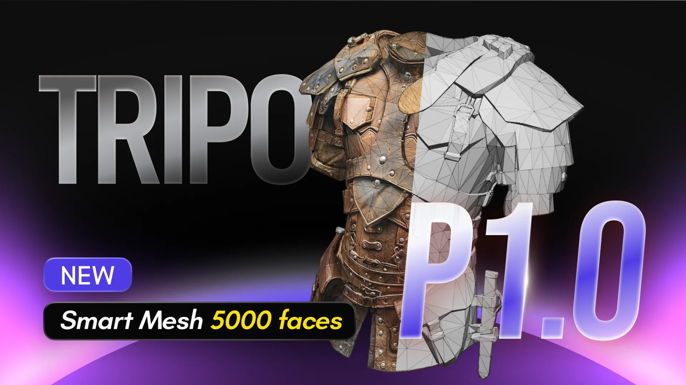

01
Tripo Smart Mesh P1.0：2 秒生成乾淨 Low-Poly 拓樸，直接瞄準即時資產
Tripo 將 Smart Mesh P1.0 定位成 H3.1 高模生成的即時資產搭檔，主打約 2 秒輸出結構化 low-poly topology，降低 AI 網格進入遊戲管線前的重拓樸成本。

AI 3D ★★★★★
完整分析
生成流程
Smart Mesh P1.0 不是單純對既有高模做 decimation，而是把乾淨、結構化的 low-poly topology 當成生成結果的一部分；官方將它與 H3.1 的 high-poly 角色分工，前者面向遊戲、XR 與大量即時資產，後者保留高細節輸出。
製作價值
對遊戲美術最直接的價值是把「生成後重新拓樸」從固定工時改成可選的品質修整。若輸出 edge flow、輪廓與 UV 後續能維持穩定，批量 prop、環境小物與 live-ops 資產的 lead time 有機會明顯下降，也更適合接自動化資產工廠。
導入測試
先用角色、硬表面 prop、非對稱有機物三組基準測試，固定目標面數比較 Smart Mesh 與人工 retopo 的 silhouette、edge flow、UV、normal bake、骨架變形與 Unreal/Unity import；官方宣稱的 2 秒只代表生成速度，真正 gate 應是 cleanup 分鐘數與引擎可用率。